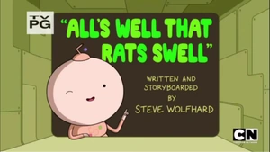
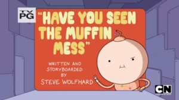
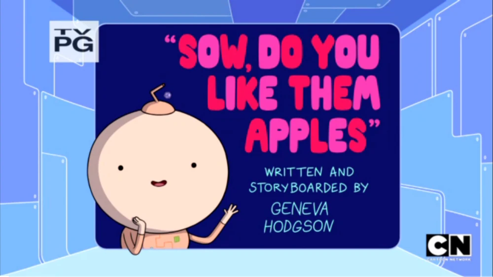
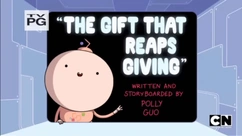
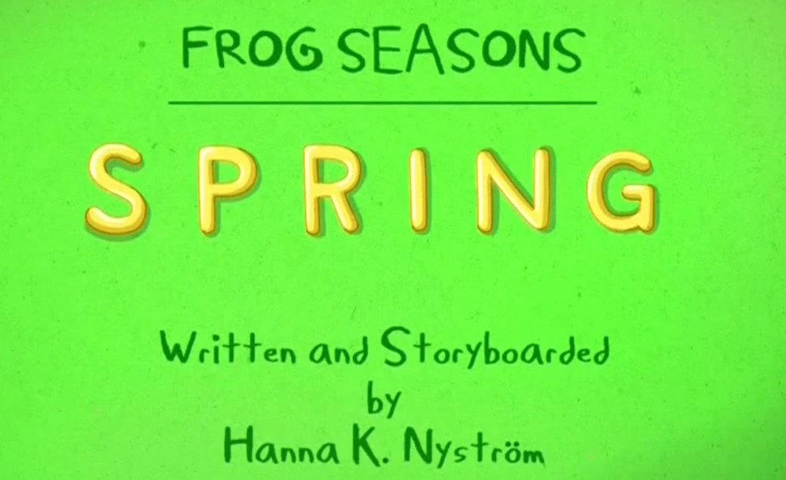
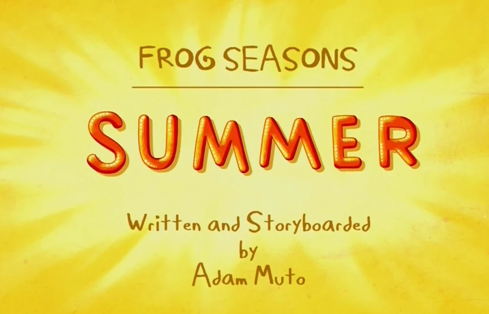
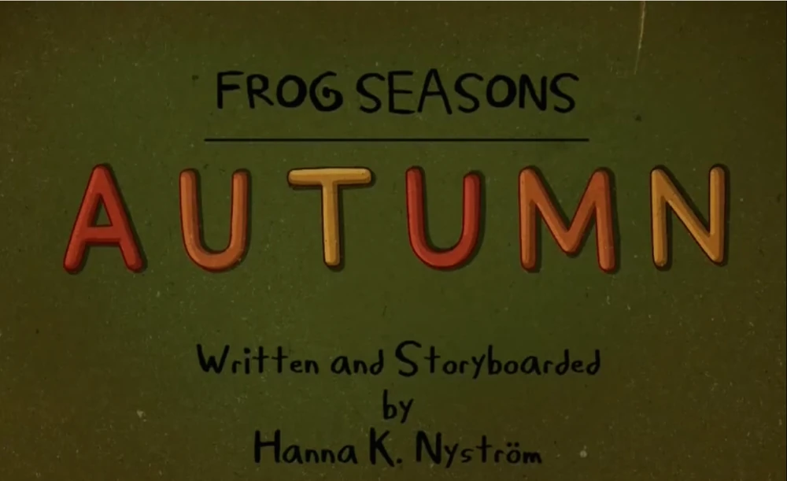
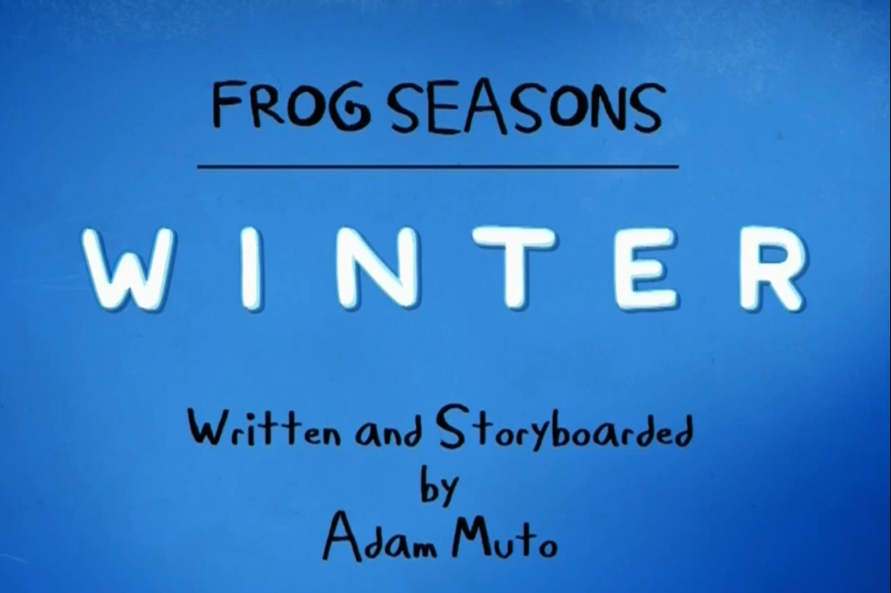
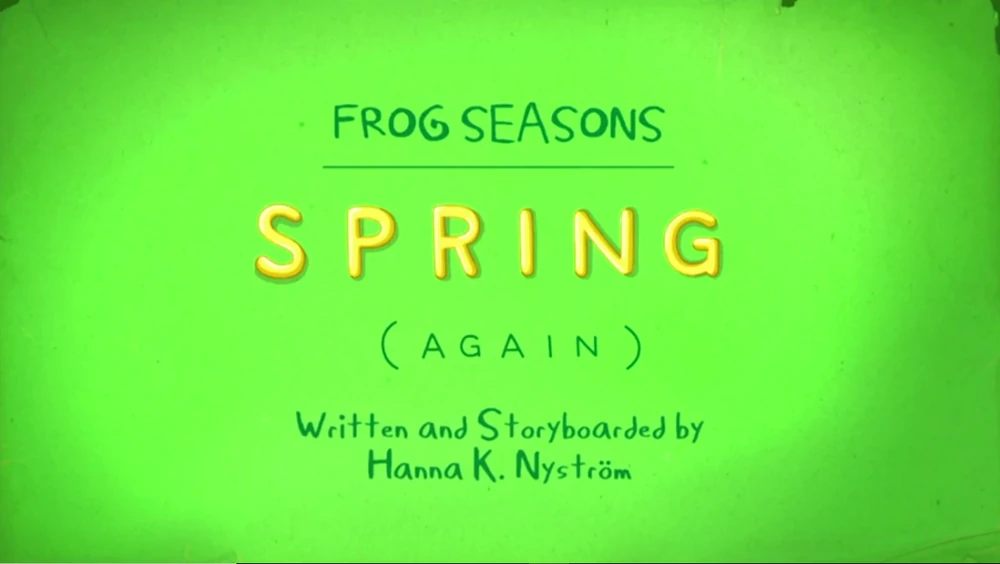

BMO descobre um rato desonesto na farinha da Casa na Árvore, e as tentativas de expulsar a criatura fazem Finn ficar doente.

Finn e Jake ajudam Bonnibel à lutar contra uma praga.

Rei Gelado está com fome de bacon, então ele tenta comer um porco solitário em uma fazenda.

Morte tenta encontrar um presente ideal para sua namorada, Vida.

Finn e Jake vão atrás de um sapo, para tentar descobrir o que acontece se ele colocar a coroa.

Finn e Jake continuam no caminho para ver o sapo colocar a coroa, quando passam por um deserto escaldante, e Jake começa a ficar impaciente.

Quando veio um vento forte a Coroa vai parar nas mãos de Jake embora Finn disse para ele não botar a coroa na cabeça Jake não lhe da ouvindo e ele acaba se tornando o Rei dos Sapos.

Finn e Jake seguem o sapo até o Reino Gelado.

Finn e Jake seguem um sapo que carrega uma coroa pela primavera (outra vez).